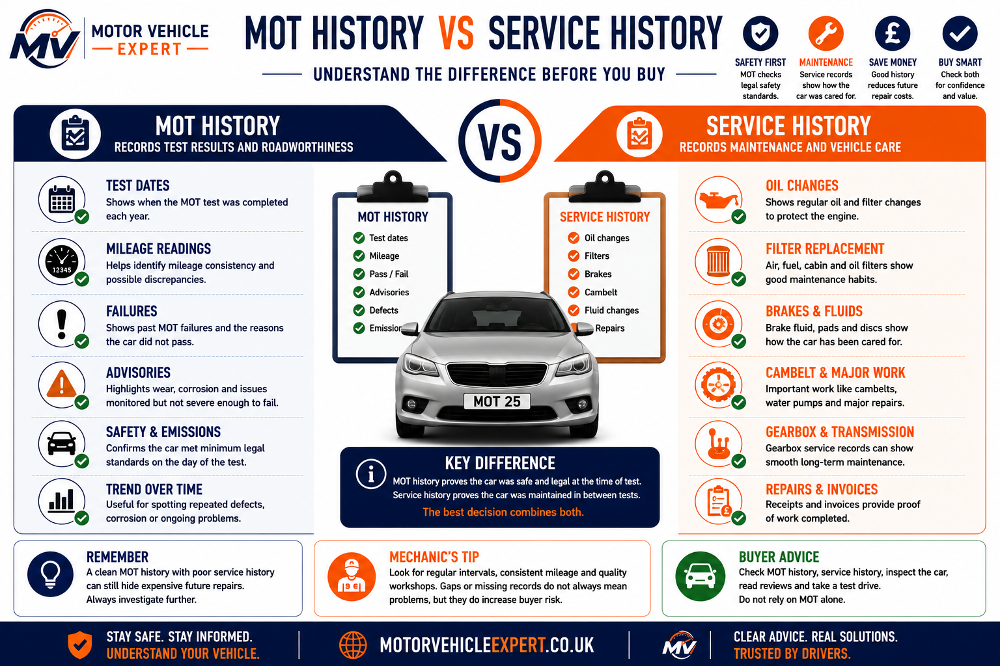

Does An MOT Check Service History?
No. An MOT does not check service history. The tester does not require a stamped service book, dealer history, garage invoices, digital records or proof of maintenance to pass the vehicle.
The MOT is a roadworthiness and environmental inspection. It checks whether the vehicle meets minimum legal standards on the day of the test. Service history is separate because it shows maintenance over time.
No Service History
Missing service records do not automatically stop a vehicle passing its MOT.
Poor Maintenance
Missing records can hide skipped oil changes, overdue cambelts, old fluids or neglected repairs.
Do Not Rely On MOT Alone
Use MOT history, service evidence, condition checks and a test drive together before trusting the car.
A valid MOT tells you the car met minimum standards when tested. It does not prove the engine oil was changed, the cambelt was replaced, the gearbox was serviced or the car was maintained properly between tests.
What Is Service History?
Service history is evidence that a vehicle has been maintained over time. It can include stamped service books, garage invoices, dealer records, digital service entries and receipts for important maintenance work.
Service history is not the same as MOT history. MOT history records test results and advisories. Service history records maintenance, repairs and proof that important work was carried out.
Garage Or Dealer Stamps
A stamped service book can show when routine servicing was carried out and which garage recorded the work.
Receipts & Repair Records
Invoices are often stronger evidence than stamps because they show what work was actually completed.
Online Service Records
Some modern cars use digital service history stored by dealers or manufacturer systems.
Mileage Consistency
Service dates and mileages help confirm whether mileage looks realistic alongside MOT records.
Proof Of Care
Regular servicing suggests the car was maintained rather than only repaired when something failed.
Buyer Confidence
Strong service history can support resale value and reduce uncertainty when buying.
The best service history is not just a book full of stamps. Invoices showing oil changes, filters, brake fluid, cambelt work, coolant repairs and major maintenance are often more useful because they prove what was actually done.
MOT History And Service History Are Not The Same Thing
Many drivers assume a valid MOT proves a vehicle has been well maintained. It doesn't. MOT history records whether the vehicle met the minimum legal roadworthiness standards on the day of the inspection, while service history records how the vehicle has been maintained throughout its life.
Think of an MOT as a yearly roadworthiness inspection and service history as the vehicle's maintenance diary. One confirms the vehicle was legal to drive when tested, while the other shows how well it has been cared for between MOTs.
What An MOT Record Shows
- ✓Passes and failures
- ✓Advisory notices
- ✓Mileage at each MOT
- ✓Repeated defects
- ✓Brake, tyre and suspension issues
- ✓Corrosion history
- ✓Emissions failures
MOT history helps identify recurring safety problems, advisory patterns and possible mileage inconsistencies, but it does not prove routine servicing has been carried out.
How To Check MOT History →What Service Records Show
- ✓Oil and filter changes
- ✓Air, fuel and cabin filters
- ✓Brake fluid replacement
- ✓Coolant servicing
- ✓Cambelt replacement
- ✓Gearbox servicing
- ✓Repair invoices and maintenance records
Service history provides evidence that routine maintenance has been completed and is often the best indication of how carefully a vehicle has been looked after.
How To Check Service History →
The infographic above highlights one of the biggest misconceptions among used car buyers. A clean MOT history and a complete service history are not interchangeable. MOT records focus on roadworthiness, while service records demonstrate routine maintenance. The strongest buying decision comes from reviewing both together rather than relying on either one alone.
MOT History
Legal SafetyConfirms whether the vehicle met minimum legal standards at the time of each MOT.
Service History
Vehicle CareShows evidence of routine servicing, maintenance intervals and repair work.
Check Both
Best PracticeReview MOT history, service records and invoices together before buying any used vehicle.
Inspect The Vehicle
Always RecommendedDocumentation never replaces a proper inspection and comprehensive test drive.
Experienced mechanics rarely judge a used car using MOT history alone. The safest buying decision combines MOT history, service records, repair invoices, a physical inspection and a thorough test drive. When these all support each other, you gain a much clearer picture of how the vehicle has been maintained throughout its life.
Can A Car Pass MOT With No Service History?
Yes. A car can pass its MOT with no service book, no invoices and no proof of maintenance if it meets the required road safety and emissions standards on the day of the test.
The MOT tester is not checking whether the oil was changed, whether the cambelt was replaced on time, whether the gearbox has been serviced or whether the car has followed the manufacturer service schedule.
No Service History
A vehicle can pass if it is roadworthy, safe and meets MOT standards on the day of the inspection.
Poor Maintenance Defects
Neglected tyres, worn brakes, suspension wear, oil leaks, emissions faults and warning lights can all lead to advisories or failures.
Hidden Repair Costs
No service history can increase the risk of future engine, clutch, gearbox, turbo, DPF or cambelt costs.
A fresh MOT can make a car look reassuring, but it does not prove the vehicle has been serviced properly. Missing history should always make you check condition, mileage, invoices and major maintenance more carefully.
Legal Roadworthiness
The MOT confirms minimum safety and emissions standards at the time of the inspection.
Long-Term Health
Servicing helps protect the engine, gearbox, fluids, filters, belts and major mechanical systems.
Use Both Together
Treat MOT history, service history, inspection and test drive results as separate pieces of evidence.
Some of the most expensive used car problems do not show up during a normal MOT. Missed oil changes, overdue cambelts, neglected coolant, old brake fluid and poor gearbox maintenance can all remain hidden until after purchase. That is why a car can legally pass its MOT and still carry serious future repair risk.
Should You Buy A Car With No Service History But A Valid MOT?
A valid MOT is useful, but it should not be treated as proof that the car has been well maintained. A car can be legal on test day and still carry hidden maintenance risk if service records are missing.
An MOT is not a service, not a warranty and not a full mechanical inspection. Missing service history should make you slow down, check evidence carefully and price the risk before buying.
Cheap Older Car
A low-value older car with no history may still be worth considering if the condition, MOT history, test drive and inspection are strong.
Incomplete Records
Partial history should affect the price. Ask for invoices, check mileage consistency and budget for a full service after purchase.
Major Jobs Unknown
Unknown cambelt, timing chain, gearbox, turbo, DPF, hybrid or EV maintenance can become expensive very quickly.
“It Has A Full MOT”
A fresh MOT does not prove the car has had oil changes, fluid changes, filters, brake fluid or scheduled maintenance.
Invoices Beat Promises
Receipts showing dates, mileage, parts and garage details are stronger than verbal claims or vague service stamps.
Gaps Cannot Be Explained
If the seller cannot explain missing records, mileage gaps, warning lights or major maintenance uncertainty, be prepared to walk away.
The less service history a car has, the more important the physical inspection becomes. Check the MOT history, mileage trend, dashboard lights, fluid condition, leaks, tyres, brakes, suspension, engine noise and test-drive behaviour before agreeing a price.
A missing service history does not automatically mean a car is bad, but it removes evidence. When evidence is missing, the price should reflect the risk. Budget for immediate servicing, fluids, filters and any overdue major maintenance before treating the car as a safe buy.
Service History, MOT History And Used Car Buying Risk
A valid MOT and a complete service history provide different types of information. Use this comparison table to understand which situations mainly affect the MOT, which increase buying risk and what action you should take before purchasing a used vehicle.
The MOT confirms whether a vehicle met minimum legal roadworthiness standards on the day of testing. Service history helps predict future reliability, maintenance quality and the likelihood of expensive repairs. The safest buying decision comes from considering both together.
| Situation | MOT Relevance | Buying Risk | Recommended Action |
|---|---|---|---|
| No service history but valid MOT | Usually passes MOT | Medium–High | Inspect carefully, negotiate the price and budget for an immediate full service. |
| Full service history and clean MOT | Positive overall | Lower | Still carry out a proper inspection and test drive before buying. |
| Repeated MOT advisories | May indicate recurring faults | Medium | Confirm advisory repairs have been completed with invoices or receipts. |
| No cambelt replacement evidence | Not checked by MOT | High | Price cambelt replacement before agreeing a purchase. |
| No oil service records | Not checked by MOT | High | Assume servicing is overdue and inspect the engine carefully. |
| Mileage inconsistencies | May appear in MOT history | High | Compare MOT records, service invoices and the vehicle condition. |
| Fresh MOT but warning lights illuminated | May indicate developing faults | High | Carry out a diagnostic scan before committing to buy. |
| Seller relies on "Full MOT" | Only proves roadworthiness on test day | Medium | Never rely on the MOT alone—check service history and inspect the vehicle independently. |
MOT + Service History
Best CombinationProvides the clearest picture of both roadworthiness and long-term maintenance.
Missing Service Records
Higher RiskBudget for servicing and investigate overdue maintenance before purchase.
Independent Check
RecommendedA professional inspection can uncover faults that paperwork cannot reveal.
Never Rely On One Record
Check EverythingCombine MOT history, service history, invoices, inspection results and a thorough test drive.
Experienced technicians treat paperwork as supporting evidence rather than proof of condition. A complete service history adds confidence, while MOT history highlights previous defects and advisory trends. Neither replaces a careful inspection of the vehicle itself. The strongest buying decision comes from combining documentation with a physical inspection and road test.
What Should You Check If Service History Is Missing?
If a car has missing or incomplete service history, do not rely on the MOT alone. Use the MOT record, paperwork, physical inspection and test drive together before deciding whether the car is worth the risk.
The less maintenance proof a car has, the more carefully you should inspect it. Missing records do not always mean the car is bad, but they remove confidence and should affect the price.
Buyer Checklist
- ✓Check MOT history for repeated advisories.
- ✓Compare mileage across MOT records.
- ✓Ask for invoices, not just stamps.
- ✓Look for cambelt or timing chain proof.
- ✓Check oil level and oil condition.
- ✓Inspect coolant condition and leaks.
- ✓Check brake, tyre and suspension condition.
- ✓Look for dashboard warning lights.
- ✓Test drive from cold if possible.
- ✓Budget for a full service after purchase.
Best Diagnostic Order
When history is missing, work from evidence to condition before discussing price.
- 1Check MOT history online.
- 2Compare mileage trends.
- 3Ask for invoices and repair proof.
- 4Inspect the vehicle condition.
- 5Check whether major maintenance is due.
- 6Scan for fault codes if warning lights appear.
- 7Negotiate based on missing evidence.
- 8Walk away if the gaps cannot be explained.
Check For Mileage Gaps
Mileage inconsistencies between MOT records, service invoices and vehicle condition should always be investigated.
Check Expensive Maintenance
Cambelts, timing chains, gearbox servicing, brake fluid, coolant and DPF issues can be expensive if overdue.
Use Missing History Properly
Missing records should affect the price because you may need to service the car immediately after purchase.
A missing service record is not just missing paperwork — it is missing evidence. If the seller cannot prove maintenance, assume important work may be overdue until proven otherwise. That does not always mean walking away, but it should change your inspection, negotiation and repair budget.
Does MOT Check Service History FAQs
Clear answers to common UK driver questions about MOT history, service records, missing maintenance evidence and buying cars with incomplete history.
Does an MOT check service history?
No. MOT testers do not check service history, service books, garage invoices, dealer stamps, digital service records or maintenance receipts during the MOT.
Can a car pass MOT with no service history?
Yes. A car can pass its MOT with no service history if it meets the required road safety and emissions standards on the day of the test.
Is MOT history the same as service history?
No. MOT history shows test dates, mileage, passes, failures and advisories. Service history shows maintenance such as oil changes, filters, brake fluid, coolant, cambelts and repair invoices.
Does missing service history affect the MOT result?
Not directly. Missing service records do not cause an MOT failure by themselves, but poor maintenance can lead to MOT failures such as worn tyres, brake defects, leaks, emissions problems or warning lights.
Should I buy a car with no service history but a valid MOT?
Only with caution. A valid MOT does not prove the car has been serviced properly. Check MOT history, mileage, condition, invoices, warning lights and repair risk before buying.
Can a valid MOT hide poor maintenance?
Yes. A valid MOT means the vehicle met minimum legal standards at the time of the test. It does not prove oil changes, cambelt replacement, gearbox servicing or other maintenance has been done.
What is more important: MOT history or service history?
Both matter. MOT history helps show roadworthiness, mileage trends and previous defects. Service history shows maintenance quality and helps predict future repair risk.
Can MOT history show mileage problems?
Yes. MOT records include mileage readings, so they can help identify mileage inconsistencies when compared with service invoices and the vehicle condition.
Do service stamps prove the car was serviced properly?
Service stamps help, but invoices are stronger evidence because they show what work was carried out, which parts were used and when the maintenance was completed.
What should I do after buying a car with missing service history?
Budget for an immediate full service, check fluids and filters, inspect brakes and tyres, confirm cambelt or timing chain requirements and investigate any warning lights or leaks.
Does a fresh MOT mean the car is safe to buy?
Not always. A fresh MOT is useful, but it is not a warranty, not a service and not a full mechanical inspection. Always check condition, paperwork and test-drive behaviour.
Should missing service history reduce the price?
Yes. Missing records increase uncertainty, so the price should reflect the risk of overdue servicing, major maintenance and possible hidden repair costs.
This guide explains why an MOT does not check service history and why maintenance records still matter when buying a used car. For further reading, use the Related Guides section above to explore MOT history checks, used car buying advice and common MOT failure risks.